Awesome SVG
Accessibility
Animation
Basics
Books
Downloads
Experiments
Filters
Follow twitter
Fragments
Gradients
Grunt plugins
Gulp plugins
Icons
Libraries
Masks clips
Optimization
Patterns
Responsive
Sites using-svg
Slides
Snippets
Softwares
Text
Videos
groups
Libraries
Snap.SVG
Two.js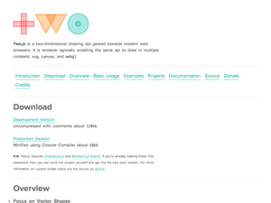
Raphael.js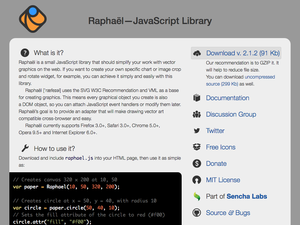
D3.js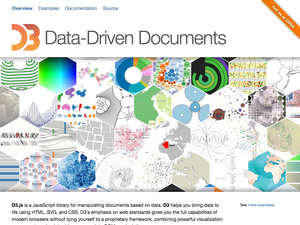
SVG.js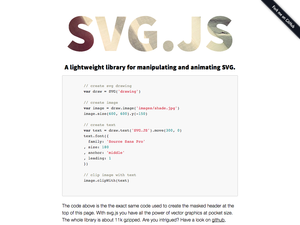
GreenSock Draw SVG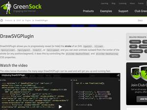
Bonsai.js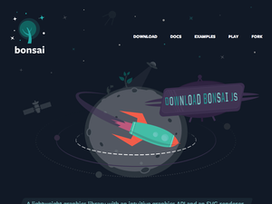
SVGWeb
SVGRef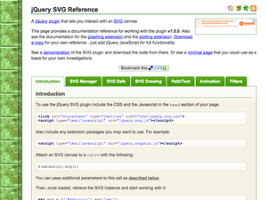
VLEX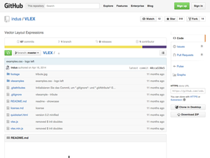
Chartist.js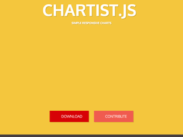
MetricsGraphics.js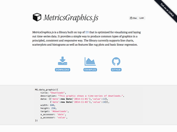
Charted
Highcharts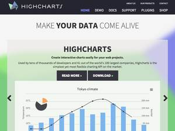
Lazy Line Painter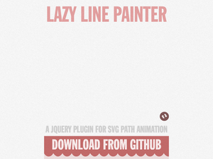
Path JS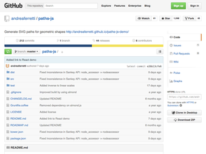
VelocityJS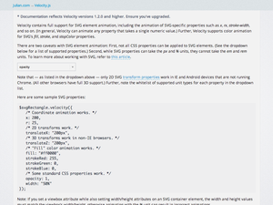
SeenJS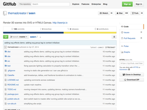
DrawSVG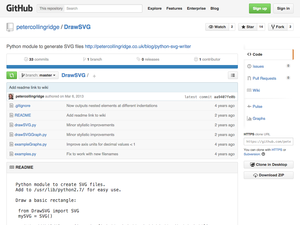
SVGPan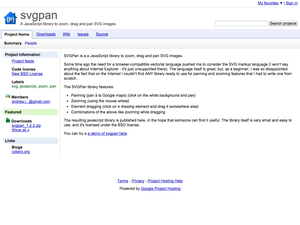
svg-pan-zoom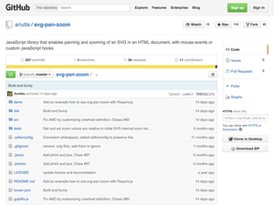
C3.js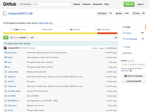
SvgVerlet.js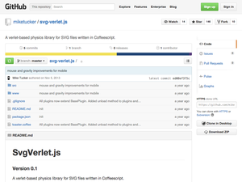
WebFrames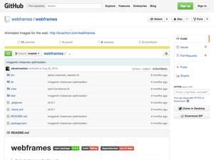
Walkway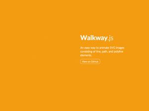
Vivus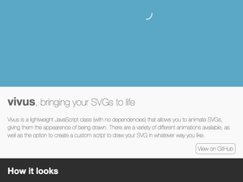
Landline
wheelnav.js